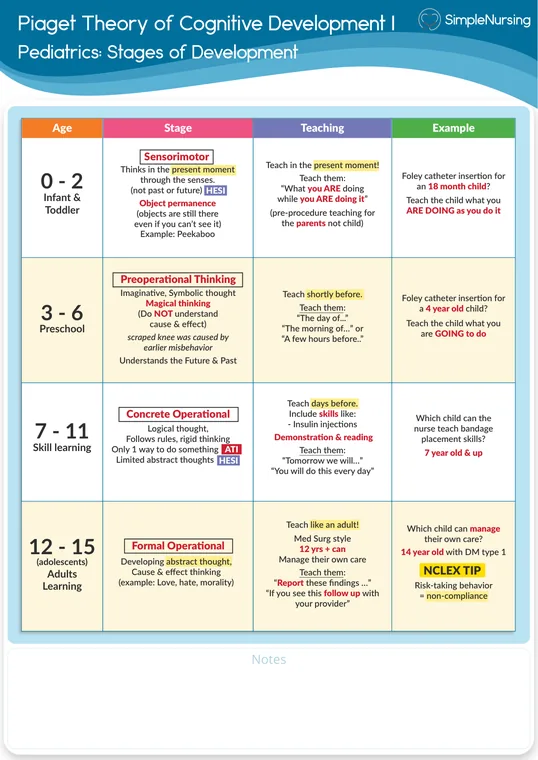
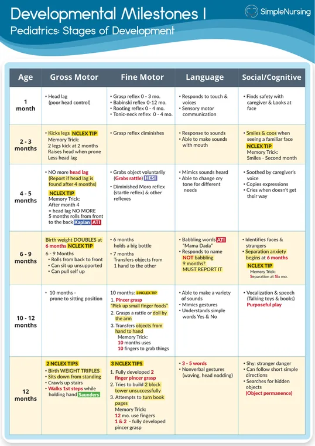
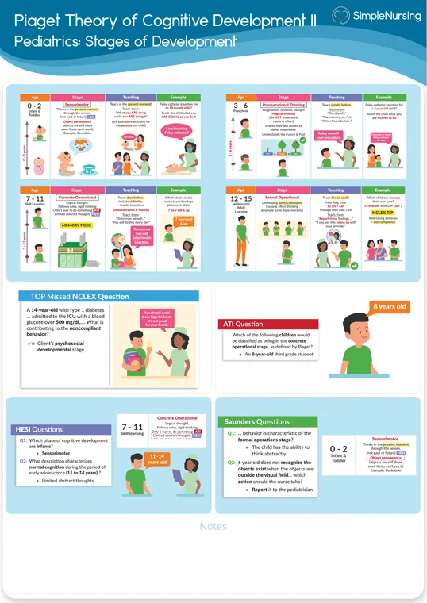
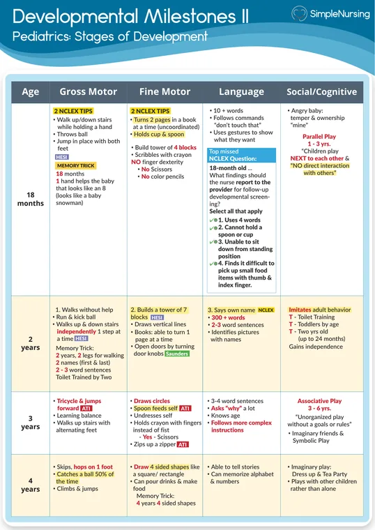
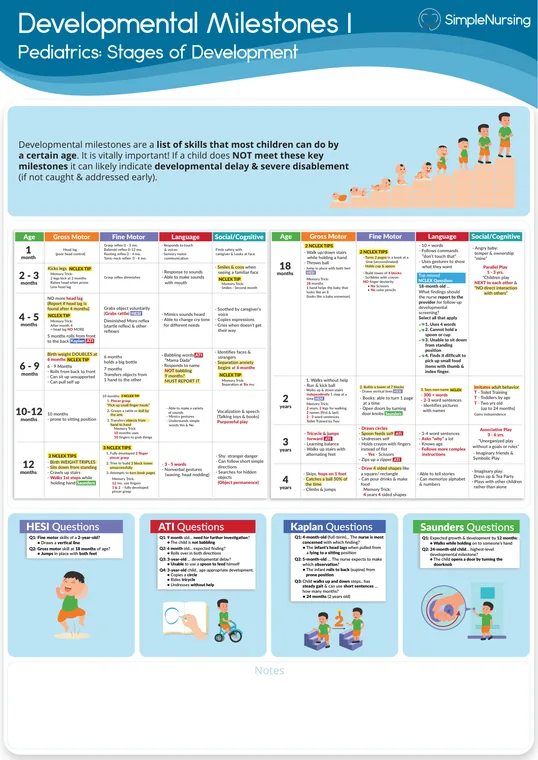
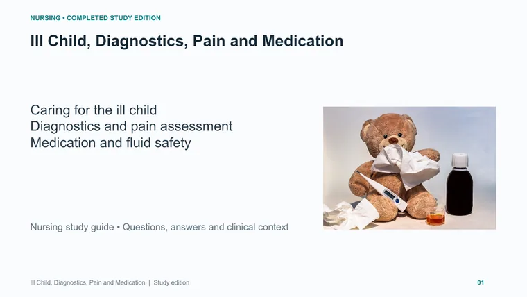

Nursing Care of the Child
Growth and development, and the child in illness — fourteen modules across four exams and a final.
M1 visual references 51
Every card in the Visual library tagged NUR 235 · M1 · Intro to Pediatric Nursing, grouped by type. Tap a group to open it.
Infographics 10
Study guides & PDFs 27

Basic Chart - Piaget Theory of Cognitive Development I📄 PDF · Opens in Drive →Preview here

Visual Chart 1 - Developmental Milestones📄 PDF · Opens in Drive →Preview here

Visual Chart - Piaget Theory of Cognitive Development II📄 PDF · Opens in Drive →Preview here

Visual Chart 2 - Developmental Milestones📄 PDF · Opens in Drive →Preview here

Basic Chart 1 of 2 - Delopmental Milestones📄 PDF · Opens in Drive →Preview here
PowerPoints 10

Ill Child, Diagnostics, Pain & Medication — Completed Study Edition📊 PowerPoint · Opens in Drive →Preview here
Preview here
Dosage & calculation 4
M2 visual references 33
Every card in the Visual library tagged NUR 235 · M2 · The Infant (0–1 year), grouped by type. Tap a group to open it.
Infographics 5
Study guides & PDFs 24
Preview here
Preview here
Preview here
Preview here
PowerPoints 4
M3 visual references 32
Every card in the Visual library tagged NUR 235 · M3 · Toddler & Preschooler, grouped by type. Tap a group to open it.
Infographics 6
Diagrams & drills 1
Study guides & PDFs 21
Preview here
Preview here
Preview here
Preview here
Preview here
Preview here
PowerPoints 4
M4 visual references 26
Every card in the Visual library tagged NUR 235 · M4 · School-Age & Adolescent, grouped by type. Tap a group to open it.
Infographics 3
Study guides & PDFs 18
Preview here
Preview here
Preview here
Preview here
📊 Exam 1 infographic collection — 48 plates
Your 11×17 PowerPoint of Simple Nursing and other infographics for Modules 1–4: growth and development, Piaget, Erikson and milestones, pediatric assessment, pain, procedures and poisoning. One plate per slide.
🎧 Exam 1 exam-prep recording
What Dr. Hansen actually said in the review session for this exam — her numbers, her worked calculations, her priority rulings. On an exam, this beats the textbook.
- Newborn RR is
30–60. A rate of 68 with mild flaring in a 6-hour-old is abnormal but may be transient from crying — the first action is to calm and reassess, not call the provider and not start oxygen. Her "least invasive first" rule governs any borderline finding that could be activity-related. - Palmar grasp is present at birth and fades by 3–4 months. It is involuntary, so it never signals fine-motor development and never signals seizure activity.
- Under conscious sedation, a SpO2 drop from 98% to 89% outranks mild hypotension, arousable drowsiness, and a heart rate drifting 95 → 88. Pure ABC ranking.
- Sedation safety bundle: bag-valve-mask and emergency airway gear at the bedside · continuous RR/HR/SpO2 · NPO before, and until the gag reflex returns · serial LOC checks · no ambulation until protective reflexes and full alertness return. Prone is rejected — obstruction risk.
- Gross motor to memorize: sits ~
6 mo· crawls7–9 mo· pulls to stand by9 mo· walks12–15 mo. - Independent spoon use ~
18 mo· stairs with help ~2 yr· two-word sentences ~24 mo· scribbling by18 mo· pedals a tricycle by3 yr· ties shoelaces around 5, not 4. - Hot dogs in round slices are a choking hazard — cut them lengthwise into long thin strips. Choking beats nutrition on both safety and airway grounds.
- Toddler nutrition: whole milk to age 2 then lower fat · small frequent meals because of physiologic anorexia · juice capped around
4 oz/daywith water preferred. - Erikson for the toddler is autonomy vs shame and doubt. Letting him pick his own shirt supports it; doing everything for him, or forbidding "no," undermines it.
- Preschoolers (3–5) need a consistent bedtime routine with quiet reading. Screens before bed degrade sleep; energy drinks are never appropriate for children.
- Puberty: boys start with testicular enlargement, then voice and facial hair. Menarche arrives about 2 years after breast budding. Girls' growth spurt precedes boys'.
- Motor vehicle crashes are the leading cause of adolescent death, with alcohol and drugs a major contributor — refusing to drive or ride with an impaired driver outranks emergency kits, insurance and GPS.
- Adolescent health promotion prioritizes peer relationships and substance-use prevention. Cardiovascular prevention, osteoporosis and colorectal screening are wrong-age distractors.
- School-age 7–11 = Piaget concrete operational: logical thought and conservation.
- Calc: acetaminophen
60 mg/kg/daydivided q6h, 3.6 kg, 160 mg/5 mL → 216 mg/day ÷ 4 doses = 54 mg →1.7 mL. - Calc: amoxicillin
90 mg/kg/dayin 2 doses, 12.5 kg, 200 mg/5 mL → 1,125 ÷ 2 = 562.5 mg →14.1 mL.
🎮 Pediatric Matching Games
187 cards, seven topics. Six pairs a round, on a stopwatch — a wrong match adds a second. Every match comes with an explanation and a source. Pick a board:
- MilestonesCDC checklist ages (24)
- Piagetcognitive stages, ages approximate (16)
- Eriksonall eight psychosocial stages (21)
- ImmunizationsCDC 2025 study edition (16)
- Play typessix types, scenarios and age bands (24)
- Vital signsHR, RR, BP and temperature by age (56)
- Pain scalesFLACC, FACES, numeric, NIPS, FPS-R (30)
Milestones are CDC checklist ages — the age by which most children have the skill, not the average age they get it.
The vital signs are Fuller’s course chart. That is course recall, not emergency thresholds and not a universal clinical normal. Temperatures are axillary.
On pain, the game labels both rules. Fuller puts numeric ratings at over age 5 on cognitive level; RCH uses over 7. Neither is quietly substituted for the other.
Hints and the answer guides count as help, not a first-try hit. Lecturer and source names stay off the tiles — they are in the answer guide.
▶️ Play here
🕹️ Module game rooms — Modules 4–14
One room per module, in all three courses. Matching, real case questions from your course quizzes, and a visual challenge. Four pairs at a time, no countdown; your progress stays on this phone. Each module page also has a “Play this module” card.
M5 visual references 18
Every card in the Visual library tagged NUR 235 · M5 · Hematology & Childhood Neoplasms, grouped by type. Tap a group to open it.
Infographics 3

Diagrams & drills 1
Study guides & PDFs 12
Preview here
Preview here
Preview here
Preview here
Preview here
Preview here
PowerPoints 2
M6 visual references 24
Every card in the Visual library tagged NUR 235 · M6 · Immune, Infectious Disease, Skin & Burns, grouped by type. Tap a group to open it.
Infographics 3
Study guides & PDFs 20
Preview here
Preview here
Preview here
Preview here
Preview here
Preview here
Preview here
PowerPoints 1
M7 visual references 15
Every card in the Visual library tagged NUR 235 · M7 · Neurologic & Neuromuscular, grouped by type. Tap a group to open it.
Infographics 2
Study guides & PDFs 13
Preview here
Preview here
Preview here
Preview here
Preview here
Preview here
Preview here
Preview here
🎧 Exam 2 exam-prep recording
What Dr. Hansen actually said in the review session for this exam — her numbers, her worked calculations, her priority rulings. On an exam, this beats the textbook.
- Assess first: sickle cell with sudden chest pain, fever and dyspnea = acute chest syndrome. It outranks pallor in iron-deficiency anemia, a mild post-bump knee swelling in hemophilia, and a sore throat in mono — all expected findings.
- A mild cold or runny nose is NOT a reason to defer MMR. Only moderate-to-severe illness postpones it. Mild rash or fever afterward is expected. Second dose at
4–6 years. - Measles: airborne precautions plus supportive care and fluids. Antibiotics only for secondary bacterial infection. Restrict unvaccinated and high-risk visitors, not all visitors.
- Allergy skin testing: hold antihistamines 5–7 days (longer per provider). Itching during and after is expected. Acetaminophen is neither required nor helpful.
- Pediatric HIV: persistent diarrhea with poor weight gain is the finding needing immediate action — failure to thrive, malabsorption, opportunistic infection. A mild rash, an occasional clear-sputum cough and past ear infections are lower priority.
- Pinworms: treat every household member regardless of symptoms, then repeat the dose in about 2 weeks to kill newly hatched worms. Hot-wash bedding and pajamas daily; short fingernails and hand hygiene break the cycle.
- Infant eczema: daily bathing with soap makes it worse. Bathe a few times weekly with minimal mild soap, fragrance-free moisturizer twice daily, cotton clothing, nursery humidifier.
- Thrombocytopenia: the highest-priority intervention is a soft toothbrush — gum and mucosal bleeding is the daily repeated exposure. Avoid aspirin and NSAIDs; acetaminophen is the analgesic of choice.
- Infant raised ICP looks different: bulging fontanelle plus a high-pitched cry, because open sutures change the picture. Non-specific irritability, mild forehead bruising and sleeping after a feed with normal vitals are not it.
- Myelomeningocele: sterile, moist, non-adherent dressing over the sac, prone or side-lying. Supine risks rupture. ROM and feeding are deferred.
- Baclofen for spastic CP: daytime drowsiness that interferes with physical therapy → notify the provider for a dose review. Nurses do not stop or re-time it, and abrupt discontinuation causes rebound spasticity and withdrawal.
- Post-op supratentorial brain tumor: monitor for raised ICP, HOB elevated 30°. Not flat, not early ambulation, not scheduled q2h opioids.
- Calc: ceftriaxone 600 mg from 300 mg/mL over 30 min → volume 2 mL, rate 2 ÷ 0.5 =
4 mL/hr. - Calc: acetaminophen
15 mg/kg, 18 kg, 160 mg/5 mL → 270 mg →8.4 mL. Do not round up — the digit after the tenths place is 3.
M8 visual references 15
Every card in the Visual library tagged NUR 235 · M8 · Respiratory, grouped by type. Tap a group to open it.
Infographics 3
Study guides & PDFs 11
Preview here
Preview here
Preview here
PowerPoints 1
M9 visual references 13
Every card in the Visual library tagged NUR 235 · M9 · Cardiac, grouped by type. Tap a group to open it.
Infographics 3
Study guides & PDFs 9
Preview here
Preview here
Preview here
Preview here
PowerPoints 1
🎧 Exam 3 exam-prep recording
What Dr. Hansen actually said in the review session for this exam — her numbers, her worked calculations, her priority rulings. On an exam, this beats the textbook.
- ASD: fatigue with feeding, frequent respiratory infections, poor weight gain, soft systolic murmur at the upper left sternal border from left-to-right shunting. Contrast — TOF: cyanosis, clubbing, tet spells. PDA: continuous machinery murmur at the left infraclavicular area, bounding pulses, widened pulse pressure. Coarctation: upper/lower BP differential, bounding upper pulses, weak femoral pulses.
- Cardiac cath prep: screen for iodine and shellfish allergy (contrast) · NPO
4–6 hr· expect conscious sedation, awake but relaxed, not general anesthesia · no warm compress to the site, heat vasodilates. - Cystic fibrosis: bronchodilator BEFORE chest physiotherapy. Never CPT right after meals.
- RSV needs contact AND droplet precautions. Droplets are >5 microns — a basic surgical mask within about 6 feet, not an N95 and not a negative-pressure room. Antibiotics do not treat a virus. Push fluids around the clock, not only waking hours.
- EARLY respiratory distress = nasal flaring (plus grunting and sternal retractions). Bradycardia, cyanosis and decreased LOC are LATE signs of failure.
- Fluticasone/salmeterol is daily maintenance, never a rescue inhaler. Albuterol is rescue. MDI technique: exhale fully before the inhaler goes in the mouth, rinse after, use a spacer if she cannot coordinate the breath.
- Infant heart failure: diaphoresis during feeding is the classic early sign. Expect weak peripheral pulses, tachycardia, tachypnea, feeding intolerance and poor weight gain — not strong pulses, not bradycardia, not frank weight loss.
- To reduce cardiac workload: cluster care and protect uninterrupted rest. Do not let the infant cry to "strengthen the heart," do not push active play.
- Acute rheumatic fever, Jones major criteria: carditis, polyarthritis, chorea, erythema marginatum, subcutaneous nodules. The tested finding is firm painless subcutaneous nodules over bony prominences, often with carditis. Petechiae on the soft palate is mono, not ARF.
- ARF acute phase: bed rest to lower myocardial oxygen demand plus monitoring for carditis — new murmurs, tachycardia, friction rub.
- Croup is viral — no antibiotics. Oral fluids, cool mist, upright not supine. Do not wait for cyanosis; watch increasing work of breathing and stridor at rest.
- Tonsillitis: cool fluids and monitor for dehydration, because painful swallowing cuts intake. Never gargle hydrogen peroxide in children. Side-lying beats supine.
- Calc: amoxicillin
45 mg/kg/dayin 2 doses, 33 lb (÷2.2 = 15 kg), 400 mg/5 mL → 675 ÷ 2 = 337.5 mg →4.2 mL. - Calc — maintenance fluid, memorize it:
100 mL/kg/dayfirst 10 kg,50next 10 kg,20per kg above 20. Worked: 25 lb = 11.36 kg → 1,000 + (1.36 × 50) =1,068 mL/day.
M10 visual references 8
Every card in the Visual library tagged NUR 235 · M10 · Musculoskeletal, grouped by type. Tap a group to open it.
Infographics 1
Study guides & PDFs 6
Preview here
Preview here
PowerPoints 1
M11 visual references 11
Every card in the Visual library tagged NUR 235 · M11 · Endocrine & Metabolic, grouped by type. Tap a group to open it.
Infographics 1
Study guides & PDFs 9
Preview here
Preview here
Preview here
PowerPoints 1
M12 visual references 13
Every card in the Visual library tagged NUR 235 · M12 · Gastrointestinal, grouped by type. Tap a group to open it.
Infographics 2
Diagrams & drills 1
Study guides & PDFs 10
Preview here
Preview here
Preview here
Preview here
🎧 Exam 4 exam-prep recording
What Dr. Hansen actually said in the review session for this exam — her numbers, her worked calculations, her priority rulings. On an exam, this beats the textbook.
- Duchenne is progressive with no cure — children do not outgrow it. Symptom management, physical therapy to delay contractures, and prompt reporting of respiratory infections.
- DMD respiratory protection: cough-assist device · nighttime BiPAP · upright or semi-Fowler · adequate hydration to thin secretions — do NOT restrict fluids · no prone positioning.
- Type 1 DM before 30 minutes of soccer at glucose 70: give a COMPLEX carbohydrate snack for steady release through prolonged activity. Rapid-acting insulin deepens the hypoglycemia; protein digests too slowly; delaying play is unnecessary.
- DKA: fruity breath, Kussmaul respirations, glucose 400. IV fluids and an IV insulin infusion. Verify urine output before any IV potassium, and watch potassium closely — high on presentation, falling with treatment. Oral fluids are unsafe with dehydration and altered LOC. Bicarbonate is rarely indicated.
- Hypothyroid = everything slows: weight gain, constipation, fatigue, cold intolerance, dry skin. Hyperthyroid is the mirror: heat intolerance, tachycardia, big appetite, insomnia, warm moist skin, diarrhea.
- Primary hypothyroidism: HIGH TSH with LOW free T4. Her free T4 reference is
0.8–2.0 ng/dL. - Propylthiouracil: fever and sore throat must be reported immediately — agranulocytosis. Stop the drug, urgent evaluation. Mild nausea, hair loss, rash and headache are common. Weight gain and cold intolerance mean drug-induced hypothyroidism — concerning, not emergent.
- DDH: a POSITIVE Ortolani means hip instability → further evaluation. Symmetric thigh folds, equal leg lengths and a negative Barlow are reassuring; asymmetric folds and leg-length shortening are the abnormal versions.
- JIA home care: daily ROM, warm compresses BEFORE activity to cut stiffness, scheduled rest. NSAIDs are first-line and do not damage joints when used appropriately — refusing them is the teaching error in the stem.
- JIA's serious complication is uveitis — vision changes or loss, so regular ophthalmology exams are mandatory. JIA reduces bone density, it does not increase it.
- Hirschsprung: absent ganglion cells → no peristalsis → constipation, ribbon-like stools, distension, poor feeding, growth delay. The serious complication is enterocolitis — fever, distension, explosive diarrhea, progressing to sepsis.
- Projectile vomiting with metabolic alkalosis is pyloric stenosis, a different disease — it appears here only as a distractor.
- Acute gastroenteritis expected findings: hyperactive bowel sounds and frequent watery stools. Dry mucous membranes and low urine output are dehydration, a complication, not the primary manifestation. Expect weight loss and tachycardia.
- Calc: 3% sodium chloride at
2 mL/kg, 18 kg =36 mL. Units cancel; no rounding.
M13 visual references 10
Every card in the Visual library tagged NUR 235 · M13 · Renal & Genitourinary, grouped by type. Tap a group to open it.
Infographics 3
Study guides & PDFs 6
PowerPoints 1
M14 visual references 9
Every card in the Visual library tagged NUR 235 · M14 · Comprehensive Final Review, grouped by type. Tap a group to open it.
Infographics 1
PowerPoints 8
🔍 What the marks on this page mean
Red wavy underline — an absolute rule. Never, do not, contraindicated, hold it. These are the lines that turn a right answer into a wrong one.
Gold bold — a number that decides a question: a dose, a lab value, a time window, an age cutoff.
Mint italic — a priority or sequence cue. What comes first.
Bold is the term the question is really about. Same system as your NUR 198 pages.
🧠 Mega Quiz
Every question from every week, one at a time, on its own page — plain background, big text, filter by exam or week. This page closes when it opens.
▸🔍 Where this page came from
🔍 Where this came from Reconstructed — read this
Confirmed against Dr. Hansen's four exam-prep recordings — they match this map almost exactly. Three refinements they force: procedural sedation gets two full items on Exam 1 and belongs in week 1 · burns appear nowhere in any recording, and oncology is one item, not a whole block · renal and GU appear nowhere either, which fits week 13 sitting on a fifth assessment that has no prep recording. Four recordings is not evidence of only four assessments. Originally: there is no NUR 235 course calendar in your Drive folder, but this map is not a guess: the LSC final study guide labels its content by week outright ("Week 5: Hematology/Neoplasms" through "Week 13: Genitourinary"), and each exam guide names the modules it covers. The one soft spot is the internal split of weeks 1–4, which the LSC guide treats as one block — that split comes from the Exam 1 guide's own module headings.
▸🎯 How she wants these questions answered — 13 rules
Stated out loud across all four recordings. These are not course-specific — they work on every exam you sit, including NCLEX.
- ABCs first, then safety and security, then higher Maslow levels. Maslow is the tiebreaker when several options are all technically correct.
- When two answers are both defensible, choose the LEAST INVASIVE first — reassess before you escalate to the provider or start oxygen.
- Name what is actually being asked before you look at the options: "first," "priority," "most appropriate," "highest priority," "further teaching."
- "Indicates a need for further teaching" means hunt the WRONG statement. She flags this at nearly every occurrence.
- For any developmental item: pin the child's exact age first, then match the behavior. Eliminate options that are too advanced and options that are regressed.
- Eliminate options that are not age-appropriate to the client at all — colorectal screening or osteoporosis in an adolescent stem.
- Watch absolute qualifiers. "Only," "always," "never" usually mark a wrong option — "fluids only during waking hours" is the example she uses.
- Dosage formatting: leading zero, never a trailing zero · round only at the very END, never mid-problem and never the weight · follow the stated target (tenth vs whole) · round up only when the next digit is 5 or more · ATI's rule for oral liquids is the nearest tenth.
- Check first whether a weight conversion is needed (lb ÷ 2.2 = kg). If the weight is already in kg, skip it.
- To find doses per day, divide 24 by the interval — q6h → 4 doses. Not by the interval number itself.
- For pump rates: volume ÷ time in hours. Convert minutes first — 30 min = 0.5 hr.
- Three methods are all acceptable — dimensional analysis, ratio-proportion, desired-over-have. She presents dimensional analysis as the most accurate. Do a couple of ATI Dosage Calculation modules a week.
- Normal pediatric vital sign parameters come from the Joyce catalog and the Canvas modules; milestone tables come from the ATI book. Use those, not a random chart.
▸⚠️ Before you trust the recordings — 18 corrections
❌ Flat wrong in the recording — 12 of them
Repeat these and they cost you marks. Corrected here.
- Exam 1 — milestone SATA
- She keys "A, B, D, E," then explains option B by saying infants sit steadily at 8 months, not 6 — declaring the option she just keyed correct to be wrong. She then narrates option C approvingly and leaves it out of the key.
- The internally consistent key is A, C, D, E. Also: "walks with one hand held" is about 12 months; by 15 months most children walk independently.
- Exam 4 — TSH range
- She gives normal TSH as "between 3 and 5," then says hypothyroidism means TSH "greater than 4." Both cannot hold.
- Reference is roughly
0.4–4.0 mIU/L. Her 3–5 range would make a normal TSH look abnormal. The free T4 range she gives (0.8–2.0) is correct. - Exam 3 — aspirin in rheumatic fever
- She applies a blanket Reye-syndrome caution to aspirin in ARF.
- High-dose aspirin is the standard anti-inflammatory FOR acute rheumatic fever and is one of the recognized exceptions to withholding salicylates in children. Her wider ranking — bed rest and carditis monitoring above aspirin — is fine.
- Exam 3 — Jones criteria
- She recites the major criteria and adds "fascicular rashes and petechiae," then says those are not typical of ARF. She also says ARF has no motor manifestations.
- Neither rashes nor petechiae are Jones criteria. And chorea is a motor manifestation and a major criterion — the "no motor" claim is wrong.
- Exam 2 — meningitis workup
- CT before LP because "CT is the least invasive diagnostic study."
- Least-invasiveness is not the reason — herniation risk is. And routine CT before LP is not current practice; imaging is reserved for focal deficits, papilledema, immunocompromise or persistently altered consciousness. She also downgrades blood cultures, when cultures should be drawn and empiric antibiotics started immediately rather than waiting on imaging.
- Exam 4 — DKA sequencing
- She names starting insulin as the initial intervention.
- In pediatric DKA, isotonic IV fluid resuscitation comes first, with insulin typically started 1–2 hours later, specifically to cut cerebral edema risk. The keyed option bundles fluids with insulin so the answer survives — the emphasis does not.
- Exam 4 — glucose range
- Normal glucose given as "60 to 110," and 70 mg/dL described as comfortably within the safe range. Elsewhere: "between 600 and 110."
70is the conventional lower threshold for hypoglycemia, not a comfortable middle. The intervention taught — complex carbohydrate before prolonged exercise — is still correct.- Exam 2 — thrombocytopenia SATA
- She keys "A, C and D," but option D was monitoring for hyperactivity and mood changes.
- That is not a thrombocytopenia intervention at all. Only A and C hold.
- Exam 1 — sedation positioning
- "Supine side laying is preferred, not to maintain the airway, though."
- Muddled. Prone is correctly rejected, but lateral / side-lying is the airway-protective recovery position, not supine.
- Exam 1 — juice limit
- She generalizes "4 to 6 ounces per day" for a 2-year-old.
- Current guidance is a
4 oz/daymaximum for ages 1–3; 4–6 oz applies to ages 4–6. - Exam 4 — PTU as the framing drug
- PTU is used as the hyperthyroid drug throughout.
- Correct for the agranulocytosis teaching point, but methimazole is preferred first-line in children because of PTU hepatotoxicity. PTU is reserved for first-trimester pregnancy and thyroid storm.
- Exam 2 — double-check rule
- "All pediatric math… has to be double-checked by another registered nurse."
- Independent double-checks are institution-dependent and generally mandated for high-alert medications, not literally every pediatric calculation.
🤷 Where the recordings argue with themselves
- Exam 3 cardiac cath: "B is incorrect because the child NPO" — but B was the keyed correct answer (the iodine/shellfish allergy check). She means option A. Speech slip that garbles the rationale as delivered.
- Exam 2 ceftriaxone calc: the stem asks how many mL to set the pump to deliver and the answer given is "4 mLs" — but 4 is a RATE (mL/hr); the volume is 2 mL. The stem itself is ambiguous. Her aside about "how many would be given per hour" also conflicts with a stem that says 30 minutes, though the arithmetic is right.
- Exam 1 Erikson boundary: a 3-year-old is placed in autonomy vs shame and doubt while a 4-year-old is "developing initiative." Defensible exactly at 3, where the stages abut — but many texts put a 3-year-old in initiative vs guilt. Read the stem for other cues.
- Exam 3 croup and cool mist: taught as reducing airway inflammation. It is still in nursing texts, but controlled evidence has not supported humidified air — dexamethasone and nebulized epinephrine are the current mainstays. Answer it her way; know the difference.
- She is transcribed as "Dr. Bernie Hansen" and the course as "NUR234" in the Exam 4 intro. Same presenter, right course: Dr. Renee Hansen, NUR 235.
- All seven worked dosage calculations were checked and are arithmetically correct as delivered. The math is the most trustworthy part of these recordings.
🔍 Transcript decoder
The transcripts are auto-generated and mangle medical words, so Ctrl+F fails on the real spelling. Search the left column instead.
| The transcript says | It means |
|---|---|
| nisocannula | nasal cannula |
| palm mark grass | palmar grasp |
| MPL / MPO status | NPO status |
| emulation / amulation | ambulation |
| monarchy | menarche |
| syphilitis | encephalitis |
| airboro | airborne |
| thrombophytopenia | thrombocytopenia |
| gingivitals | gingival (gum) bleeding |
| supratanteral / tent-toral | supratentorial |
| intracial | intracranial |
| Trottology of phallet | tetralogy of Fallot |
| Patent Ductus Arturus | patent ductus arteriosus |
| Coaractation | coarctation |
| infraclaviclavicular | infraclavicular |
| tachnia | tachypnea |
| RSD | RSV |
| vaginal dilation | vasodilation |
| fluconazone solumedral | fluticasone/salmeterol |
| Adver / Advir | Advair |
| leasing | wheezing |
| expaturin | expectorate |
| Euryseema / Urephema | erythema marginatum |
| fascicular / non-peritic | vesicular / non-pruritic |
| Ray syndrome | Reye syndrome |
| streptocopic caucus | streptococcus |
| frequent rubs | friction rubs |
| Doshen / Doshin | Duchenne |
| shallow birthing | shallow breathing |
| Ordalvani | Ortolani |
| bar load test | Barlow test |
| Propothioracy / Oprah treatment | propylthiouracil |
| a granulocytosis | agranulocytosis |
| Nevitis / ugitis / GIA | uveitis / JIA |
| galean cells | ganglion cells |
| hairsprung | Hirschsprung |
| abdominal dissension | abdominal distension |
| bowel cells | bowel sounds |
| souls | stools |
| waking / poor waking | weight gain |
| urinal put | urine output |
| micronuts per ml | micro-international units per mL |
| conversations | conservation (Piaget) |
| desired over half | desired over have |
| gase exchange | gas exchange |
7–10 days = a dose or a number
NUR 235 · Nursing Care of the Child · built from your own course documents · 🔒 public link · search indexing discouraged